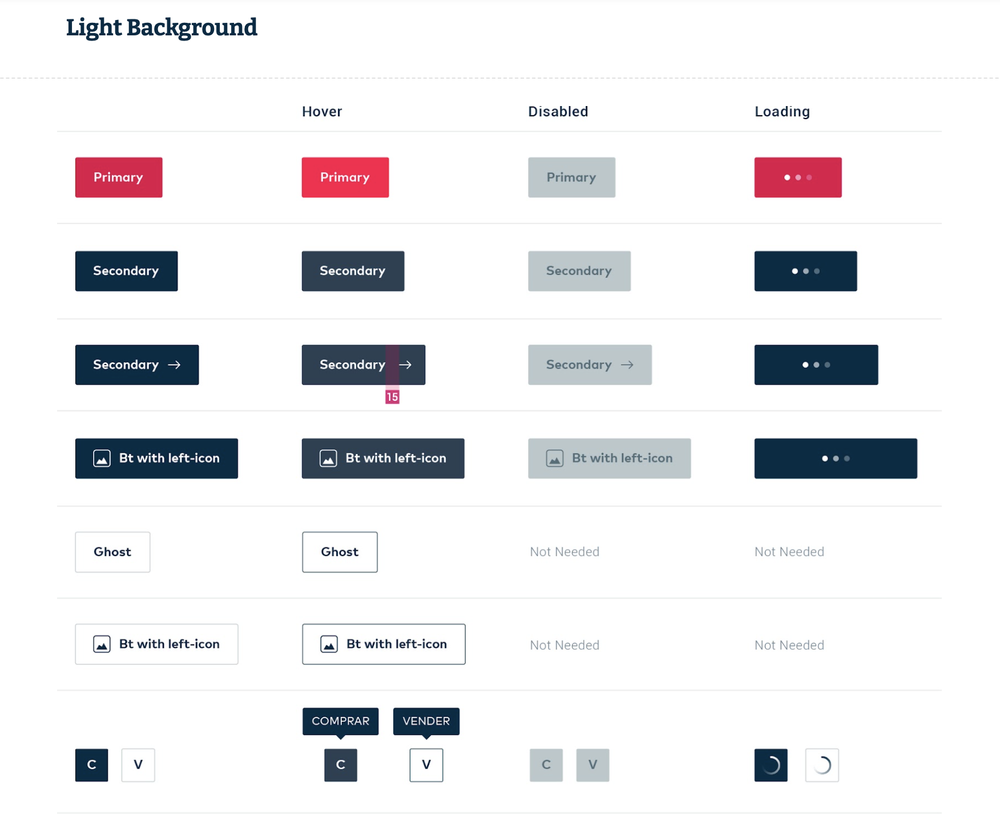

I took lead in the making of a design system for Openbank, the Openbank Design Guidelines, to achieve cross-platform, cross-product consistency and to both accelerate internal production times as well as minimize production risks between teams working across several time zones.​​​​​
After gaining buy-in from management through a PoC, we put together a team of designers and developers to map and refine/redefine elements and components based on our own approach to Atomic design. We held weekly design review meetings with the bank's stakeholders to gain insight of our client's needs and to be on the same page regarding the latest iterations of the Design language.
By being part of this initiative I gained invaluable knowledge about banking, e-commerce, fintech, and insurtech industries, and became a Design System and DesignOps touchstone inside the company.
Category
B2E, Design systems, Internal tools
Platforms
Web, iOS, Android
Role
Product Designer
Time
1 year, 7 months
Context
About Openbank
Openbank is the digital bank of the Santander Group. It started as a branch of the Santander bank as a telephone bank in 1995. They had a few milestones like being the first real-time online broker in 1999 and being the first bank with native iOS and Android app 2011, but it wans't until their rebrand with Safron and partnership with Globant that things started to pick up steam.
Openbank's new branding
Working with Globant, Openbank launched their new web and apps on 2017 with focus on usability and ease-of-use.
Problem definition
A year went by building features and growing exponentially, and starting 2018 Openbank had two specific concerns regarding design:
Accesibility was being enforced in the EU and they had a few months to become compliant with the Web Content Accesibility Guidelines (WCAG).
Because of growth speed, proper visual QA was slightly neglected, so the number of visual and interaction inconsistencies were starting to show.
Both these problems were being approached separately, and we even had a third separate initiative for responsiveness.
Lastly, my team (Insurances) was having some frictions with the Engineering team (ENG) that I was itching to solve.
Objective
That's when I stumbled upon Design Systems, which at the time were all the rage.
I hypothesized that a properly built Design system for Openbank could potentially solve all the previously stated problems and would even set us up for more sustainable growth in the future.
The stars aligned and UXPin was hosting a week-long event called Design Systems Virtual Summit packed with talks and webinars from industry leading professionals. Back in 2018 going virtual wasn't the norm, so it was a huge opportunity for me to have close contact with experts on the matter.
I asked for the week off to take everything from the Summit in, and thankfully the account accepted. I quickly learned that, before I could even start working on a proper Design System, I had to prove its value.
So first things first, I needed to come up with a proof of concept (POC) to show around.
POC: Buttons
Approach
I paired up with a visual designer working on the consistency problem and decided that in order to gain buy-in we needed to make an impact with the POC; so we started with Buttons, a "fairly simple" element that's basically in every page.
To highlight the magnitude of the problem, I went through the site taking screenshots of different buttons that already were on production. It wasn't long until I had enough to make my case. =P
Visual audit of Buttons.
Solution
We had some interviews with some frontend engineers to get to know why these inconsistencies reached prod, and part of the problem was that the documentation for designs was only consumed by the Design team. If ever. We talked to our designers and it turned out most of them were just copy-pasting elements from previous files.
So we focused then on what seemed to be the weakest link; the documentation. I started a first draft as a Google Site, so everybody on the account could have easy access to it.
We named the documentation Openbank Design Guidelines (The guideline, for short) and it was purposefully written in English so it could be consumed by our teams in India as well.

We came back with this solution to the engineers and designers that were previously interviewed and they loved the concept.
Having found new allies on the ENG team and after ironing out some details, we presented the POC to the account's management team and they were totally on board as well.
Going for it
That’s when it exploded.
Team
Now I had a team to build the entire thing:
1 Project Manager
2 Business Analysts
1 Tech Director
1 Product Designer (me)
3 Tech Leaders (Android, iOS, Web)
2 Android Developers
2 iOS Developers
2 Frontend Developers
1 Quality Analysts
Overlap with India was tricky, but doable.
On the Design side I interacted on a daily basis with basically every designer on the account, which was organized in 4 verticals of work: Public, Onboarding, Private, and Wealth.
Every vertical consisted of:
1 Design Lead
1-2 UX Designers
2-3 Visual Designers
Yes. It was a huge team. I haven’t had that much fun in years. ^_^
My role
Early on I was responsible for the complete end to end process of taking an element into the design system:
Discovery – Auditing verticals to identify most of the use cases.
Ideation – Coming up with a strategy that solves most (if not every) case with regular chechpoints with ENG.
Validation – Having regular meetings with the client and iterating as necessary.
Execution – Building the element in the Design library and giving support to its implementation.
Documentation – Writing the element’s guidelines on The guideline.
Publishing – And communicating status of elements to the rest of the account.
I knew that being owner of the entire process of a project this big wasn’t feasible, so after a couple of weeks, when I had a fairly polished process, I was a able to take some designers to help me with not-so-crucial steps: audits, adding the element to the library, documenting on the Guideline, and communicating status.
Spreadsheets are great friends of designers.
These designers were actually from the account and were being rotated back after a couple of months so they would act as ambassadors for the design system on their teams, in an effort to bolster adoption throughout the rest of the account.
This enabled me to keep ownership and my focus on the Ideation and Validation steps, while still overseeing the rest and having direct feedback from other designers regarding the process.
Process
Audit
Ideation
Validation
Execution
Documentation
Publishing
Wrap up
Outcomes
Openbank Design System paved the way (in parallel with an initiative called Model bank) for scaling design and allowing Openbank to grow comfortably into international markets, namely Germany, the Netherlands, Portugal, and Argentina.
Openbank Design System empowered Openbank’s Design team and helped position them as an strategic asset, not just people making things pretty. They were able to grow from a couple of designers to tens in a matter of months.
The design system, which started as an internal effort, was later on sold to the bank after they understood the importance of having a robust design system, and having ownership and agency over it.
This project eventuallly led to me kickstart a Design System Initiative (DSI) inside Globant, and started mentoring other senior designers on the matter.
First draft of the DSI proposal
Next steps
As I mentioned, the bank took ownership of the design system and continued its development on their own. Still, I had sort of a roadmap in mind:
Short and medium term — Finish documenting and adding to Design libraries the current basic components. Build Foundations, Components, and Containers in the Dev library. Come up with a way of taking feedback and contributions for future needs.
Long term — Having live code in the Guideline and add integration to Storybook. Complete Components and Containers in the Libraries. Refactor the Dev tech stack so all 4 verticals (and 3 platforms) can consume code from just one place.
Learnings
A design system is a common lenguage for teams to craft better experiences faster. And as such it isn’t only about designers, but the entire team. By making sure its easily consumed and retrofed by other roles, such as developers, testers, writers, owners, and managers, you make the design system stronger and more relevant.
A design system isn’t a deliverable. It should be approached as a live product that serves other products. In that regard, it should have a clear mission, defined users, a thought out roadmap, a prioritized backlog, efficient procceses, and so on.
There isn’t a one-size-fits-all solution, since every team is different and a design system, as a tool, should be tailored to the team’s specific needs and work dynamics.